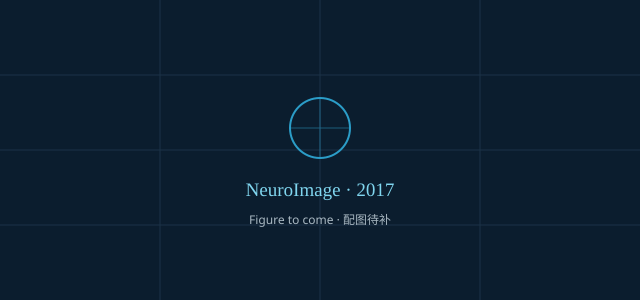
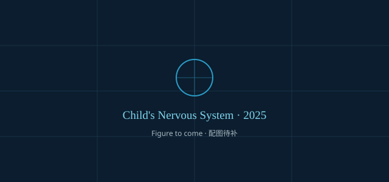
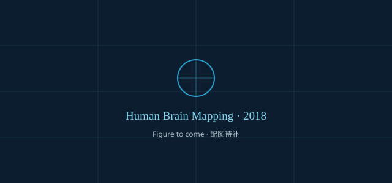

By Application · 02
Brain Science
Quantitative neuroanatomy and clinical neuro AI: fine-scale hippocampal morphology across thousands of subjects, 3D cerebellar reconstruction, glymphatic fluid transport modeling, and MRI-based clinical diagnosis. Ongoing: respiration and sleep analysis, EEG analysis, and transcranial Doppler-based cerebral blood flow assessment.
Overview
Quantitative neuroanatomy and clinical neuro AI: fine-scale hippocampal morphology across thousands of subjects, 3D cerebellar reconstruction, glymphatic fluid transport modeling, and MRI-based clinical diagnosis. Ongoing: respiration and sleep analysis, EEG analysis, and transcranial Doppler-based cerebral blood flow assessment.
- Hippocampal morphology across 2,911 subjects from multiple datasets
- Cerebellar reconstruction rated "an exceptional technical achievement" by reviewers
- Glymphatic transport modeling featured as NeuroImage cover highlight
08 · Selected work
Selected work
Each card: figure on top, key points below.

Fine hippocampal morphology analysis with a multi-dataset cross-sectional study on 2911 subjects
NeuroImage: Clinical · 2024
- Fine-scale hippocampal morphology across 2,911 subjects from multiple datasets.
- Population-level mapping of subtle anatomical variation.

Fine Scale Hippocampus Morphology Variation Cross 552 Healthy Subjects from Age 20-80
Frontiers in Neuroscience · 2023
- Morphology variation across the healthy adult lifespan (ages 20–80).
- Reference data for aging and neurodegeneration studies.

Three-dimensional digital reconstruction of the cerebellar cortex: Lobule thickness, surface area measurements and layer architecture
Cerebellum · 2022
- 3D digital reconstruction of the cerebellar cortex at the level of cortical layers.
- Reviewer: "Overall it's an exceptional technical achievement."

Cerebrospinal and interstitial fluid transport via the glymphatic pathway modeled by optimal mass transport
NeuroImage · 2017
- Cerebrospinal and interstitial fluid transport via the glymphatic pathway modeled by optimal mass transport.
- Featured as NeuroImage cover highlight.

Diagnosing acute bilirubin encephalopathy in neonates using MRI-based deep learning model
BMC Pediatrics · 2025
- MRI-based deep learning diagnosis of neonatal acute bilirubin encephalopathy.
- Decision support for a time-critical neonatal condition.

Relationship between the volume of ventricles, brain parenchyma and neurocognition in children after Hydrocephalus treatment
Child's Nervous System · 2025
- Quantifies ventricle and brain parenchyma volumes after hydrocephalus treatment.
- Links imaging measures to neurocognitive outcomes in children.

The bumps under the hippocampus
Human Brain Mapping · 2018
- Characterizes the fine dentate anatomy beneath the hippocampus.
- Anatomical foundation for subsequent fine-morphology studies.
Respiration, sleep, and EEG analysis ｜ 呼吸、睡眠与脑电分析
Ongoing work · 2026
- Respiration and sleep analysis; EEG analysis.
- Transcranial Doppler (TCD) based cerebral blood flow assessment.